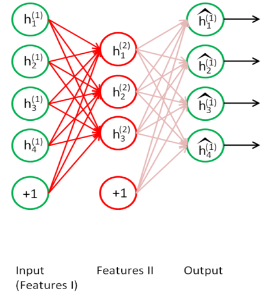
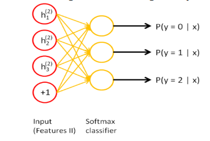
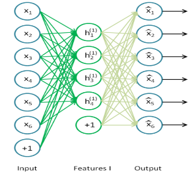
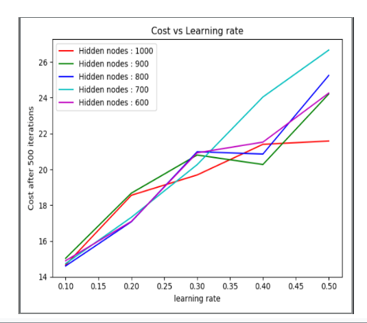
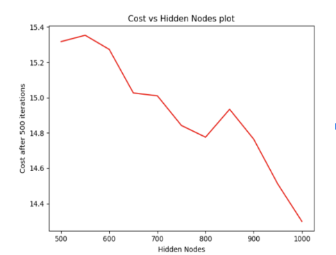
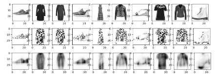
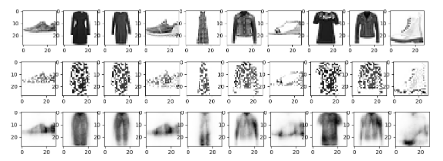
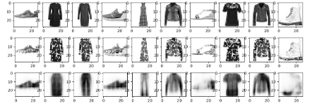
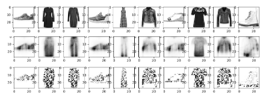
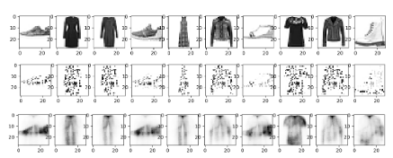

Reconstructing Noised Images of Fashion-MNIST Dataset using Autoencoders
Sai Vamsi Ogety, student, CE(CS)
1. INTRODUCTION
In today's digitalized world, there exists a lot of data that can be put to great use if organized. Most of this data isn't labeled. Supervised learning does not work that well as compared to unsupervised. So it becomes necessary for techniques which use unsupervised learning to come into play. Unsupervised learning has gained a lot of importance. It plays a huge role in all forms of applications. Hence, it has become very important to try to find ways to analyze and figure out a good sense of this data. In achieving better generalization in modeling complex distributions, the deep architectural models play a very crucial role. The generation of high-level representations from a lower level one is the main aim of this approach. It avoids poor results that might occur when random initialization is performed.
According to Schmidhuber, in "Deep learning in neural networks: an overview," Neural Networks (2015) [1], auto-encoders were proposed as a method for unsupervised pre-training in Ballard, "Modular learning in neural networks," Proceedings AAAI (1987)[2]. Autoencoders have proved to be very important and useful in the classification of unsupervised data. What an autoencoder does is, it binds encoder and a decoder function, but it is trained in such a way to retain as much of the input. This is done along with the formation of new representations which have very pragmatic properties. The main aim of this paper is to find a good and effective method for reconstruction of unsupervised data which is robust to noise. This is achieved if the dimensions in the high-level representations are generated from the many input dimensions. This is how the brain recognizes from partial results. In this project, we have developed a denoising autoencoder and a stacked autoencoder.
We utilized fashion MNIST dataset as our main dataset. So for the first part of our experiments, we have added noise to the images which can be controlled. We then developed a denoising autoencoder and trained it to remove the noise as much as possible by reconstructing the image back.
This forces the hidden layer to discover more robust features and prevent it from simply learning the identity. A stacked autoencoder is formed by adding several layers of sparse autoencoders in which the output of each layer is connected to the following layer. Greedy layer-wise training is used to obtain good parameters at each stage. This training considers one layer at a time and freezing the rest of the layers. After this step, fine-tuning of parameters is done by using backpropagation and parameters at each layer are changed at the same time [3].
Several experiments have been performed to find the best learning rate, number of nodes in hidden layers and how the network learns the features when we vary noise levels.
2. Related Work
The concept of denoising has been exploited previously by the image processing community. A statistical model was described for the spatially varying behavior of local neighbors of coefficients in a large scale image depiction. This was mainly based on orientations. They are modeled based on multivariate Gaussian density and are rotated according to the two hidden random variables. This helps in adapting to local orientation of the signal. The third hidden variable selects between this oriented process and a non-oriented scale mixture of Gaussians process, thus provides adaptability to the local orientedness of the signal. This is used to create an optimal Bayesian least squares estimator for denoising images [4][5][6].
Hopfield model was the one where denoising using autoencoders was first introduced in 1982[7]. However, the objective here is not to develop an image denoising algorithm. We explore the robustness of corrupting noise which is used to pave the way to learn appropriate intermediate representations with the aim to develop a better generic learning algorithm. So, this corruption and denoising are applied recursively to all the intermediary stages.
3. Method
3.1 Denoising autoencoders
The main aim of developing a denoising autoencoder (Fig1) is to make it learn robust representations of our dataset. First, we added noise to the input vector x. This was done by randomly selecting some percentage of the pixels and setting them to 0s. We can control the amount of noise added to the input by varying this percentage. We then mapped this noisy input to the hidden representation y by using a sigmoid function. The weight vector and bias vector are randomly initialized.

Fig. 1. Denoising Autoencoder
The parameters of this model are then trained to minimize the average loss using varying learning rates and the cost of which is calculated using the squared error function-

Fig. 2. Noisy input vector x being reconstructed back to original x
3.2 Stacked Autoencoders
For the second part of our project, we constructed a stacked autoencoder and trained its parameters to minimize the loss. We considered a 3-layered stacked autoencoder with a final softmax classification layer. The first layer (Fig.3) of this autoencoder is trained separately, and the output of this is passed onto the second layer. The second layer (Fig.4) is then trained, and this output is passed onto the next layer. This process is repeated for every layer till the final classification layer is reached. In essence, every layer of the stacked autoencoder is trained as if it were an individual autoencoder. The softmax classifier (Fig.5) gives the probabilities for each class label. Based on these probabilities whichever is the highest we classify it to that particular class.
We also fine-tune our model by freezing the weights of all the layers except the softmax layer. Fine-tuning is a method in which the parameters of a trained model are used to initialize a new model. This is usually done by freezing the weights of the layers, lowering the learning rates or by truncating the last layer [8]. We chose to freeze the weights for our experiments.
| Fig. 3. Layer one Training | Fig. 4. Layer two Training |
|---|---|
|  |  |

Fig. 5. Softmax classifier
We first train our model with a large dataset to get the best possible parameters. Then, we freeze these parameters and only train the softmax layer with 1-labeled sample per class and 5-labeled samples per class.
4. Experiments
We performed several experiments using the denoising autoencoder and the stacked autoencoders.
4.1 Experiments on denoising auto encoder
For the denoising autoencoders , we have performed the following experiments:
- Varying learning rate vs cost
- Varying number of hidden layer nodes vs cost
- Varying the noise levels
1. Varying learning rate vs cost
The main goal of this experiment is to find the best learning rate for our model. For this experiment, we have taken 5000 training samples from the Fashion Mnist dataset. Using a random generator function we have added 20% noise to the input images. Instead of performing the experiment till convergence, we stopped the gradient descent after 500 iterations. We varied the learning rate from 0.1 to 0.5 and the cost of the training samples after 500 iterations was reported. From Fig 6, we can see that for different variations of hidden layer nodes, the cost was minimum at learning rate 0.1. So for the next experiments we have fixed the learning rate as 0.1.

Fig. 6 Cost vs Learning Rate plot
2. Varying number of hidden layer nodes vs cost
The main goal of this experiment is to find the number of hidden layer nodes for better reconstruction of noisy images. For this experiment, we have taken 5000 training samples from the Fashion Mnist dataset. Using a random generator function we have added 20% noise to the input images. Instead of performing the experiment until the convergence, we stopped the gradient descent after 500 iterations.

Fig. 7. Plot of Cost vs Hidden Nodes From the previous experiment’s results, we took the learning rate as 0.1. From Fig 7, we can observe that the cost of our model after 500 iterations is minimum when the number of hidden layer nodes is 1000. So, for the next experiments, we have fixed hidden layer nodes as 1000. Reconstructed images with learning rate 0.1 and hidden layer nodes 1000 is shown in the Fig8.

Fig. 8 a) Row 1 and Row 3 are the raw images; b) Row 2 and Row 4 are the images with 20% noise; c) Row 3 and Row 6 are the reconstructed images with Learning rate = 0.1 and number of hidden layer nodes = 1000.
3. Varying the noise levels
The main goal of this experiment is to train the model with one noise level and check the reconstruction of the testing samples for different noise levels. This experiment is done in two parts. In the first part, we have trained the model with 20% noise level and tested the model with noise levels varying from 20% to 70%. In the second part, we have trained the model with 70% noise level and tested the model with noise levels varying from 20% to 70%. In this way, we can see how our model reconstructs an image which has a higher noise level percentage than the training one and vice versa.
a. First Experiment:
For this experiment, we have taken 5000 training samples from the Fashion Mnist dataset. Using the random generator function, we have added 20% noise to input images. Instead of performing the experiment till convergence, we have stopped gradient descent after 500 iterations. From the previous experiment results, we have taken learning rate as 0.1 and hidden nodes as 100. Then we tested our model with testing
images with different noise values varying from 20% to 70% (.Fig 9,10,11)
b. Second Experiment:
For this experiment, we have taken 5000 training samples from the Fashion Mnist dataset. Keeping the other parameters the same, we used random generator function and added 70% noise to input images. Instead of performing the experiment till convergence, we have stopped gradient descent after 500 iterations. From the previous experiment results, we have taken learning rate as 0.1 and hidden layer nodes as 100. Then we have tested our model with training images with different training noises varying from 20 to 70.
Fig. 9. Test images with 20% noise on a network trained with 20% noise

Fig. 10. Test images with 50% noise on a network trained with 20% noise

Fig. 11. Test images with 70% noise on a network trained with 20% noise
4.2 Experiments on Stacked AutoEncoder
- Varying learning rate.
- Varying labeled sampled per class in classifier layer
- Adding noise to the input image
- Varying noise levels of testing samples
- Comparing the accuracy of our model with SVM as the baseline
1. Varying learning rate
The main goal of this experiment is to find the best learning rate for our model. For this experiment, we have taken 5000 training samples from the Fashion Mnist dataset. Instead of performing the experiment till convergence, we stopped the gradient descent after 500 iterations. We have chosen the number of nodes for three hidden layers as 500, 300 and 100. We varied the learning rate from 0.1 to 0.5 and accuracies for the training, and testing samples are reported.
From the accuracies of Table 1, we can say that for learning rate 0.1 gives best accuracies for our model.

Fig. 12 Test images with 20 % noise on a network trained with 70% noise

Fig. 13 Test images with 50% noise on a network trained with 70% noise

Fig. 14 Test images with 70% noise on a network trained with 70% noise
| Learning Rate | 0.1 | 0.2 | 0.3 | 0.4 | 0.5 |
|---|---|---|---|---|---|
| Training Accuracy | 71.96% | 71.28% | 69.32% | 60.04% | 65.30% |
| Testing Accuracy | 72% | 20.20% | 68.40% | 68.80% | 67% |
Table 1. Training and Testing accuracies for varying learning rates
2. Varying labeled sampled per class in classifier layer
The main goal of this experiment is to find the accuracy of the model classification by changing the number of labeled samples per class for training in the final classification layer. For this experiment, we have taken 5000 training samples from the Fashion Mnist dataset. Instead of convergence, we have stopped gradient descent after 500 iterations in all the hidden layers. From the previous experiment's results, we took the learning rate as 0.1 for all the hidden layers. We have chosen the number of nodes for three hidden layers as 500, 300 and 100.
From the accuracies of Table 2, we can say that when more samples are given as input for classification layer, we get better accuracies for classification.
| 1-labeled sample per class | 5 labeled samples per class |
|---|---|
| Training Accuracy | Testing Accuracy |
| 52.84% | 50.30% |
Table 2. Training and Testing accuracies
The main goal of this experiment is to find the accuracy of the model by increasing the noise level of input data to 20%. Using Random function, we have added 20% noise to the input.
3. Adding noise to Input images
For this experiment, we have taken 5000 training samples from the Fashion Mnist dataset. Instead of convergence, we have stopped gradient descent after 500 iterations in all the hidden layers. Learning rates for all the layers including the classifier layers are chosen as 0.1. We have chosen the number of nodes for three hidden layers as 500, 300 and 100.
1 labeled sample per class 5 labeled samples per class
| Training Accuracy | Testing Accuracy | Training Accuracy | Testing accuracy |
|---|---|---|---|
| 54.5% | 50.8% | 71.8% | 70.8% |
Table 3. Training and testing accuracies
It can be concluded from these results that model which is trained from noised images performs better than the model which is trained from original images. However, as the noise level of the training images increase, the performance becomes worse.
4. Varying noise levels of testing samples
The main goal of this experiment is to train the model with one noise level and check the classification accuracy for testing samples of different noise levels. This experiment is done in two parts. In the first part, we have trained the model with 20% noise level and tested the model with noise levels varying from 20% to 70%. In the second part, we trained the model with 70% noise level and tested the model with noise levels varying from 20% to 70%. We observed that when the noise level in the testing samples increased, its accuracy decreased in both parts of the experiment (.Table 4). In this way, we can see how our model classifies an image which has a higher noise level percentage than the training one and vice versa.
Noise level in training samples – 20 % Noise level in training samples – 70 %
| Noise level in testing samples | Classification Accuracy | Noise level in testing samples | Classification Accuracy |
|---|---|---|---|
| 20 % | 78.0 | 20 % | 63.2 |
| 30 % | 68.0 | 30 % | 59.2 |
| 40 % | 62.6 | 40 % | 59.0 |
| 50 % | 48.4 | 50 % | 61.2 |
| 60 % | 43.2 | 60 % | 54.2 |
| 70 % | 38 | 70 % | 54.8 |
Table 4. Varying noise levels
5. Comparing the accuracy of our model with SVM as baseline
The Goal of this experiment is to see how our model fares out in front of SVM. The first task of this experiment is to fine tune the parameters C and Gamma for 5000 training samples, after hit and trial we have fixed the parameters C = 5 and Gamma = 0.05. Now we gave 500 testing samples and checked the classification accuracy of SVM. It turned out to be 84.32%. We have used 5000 training samples to train our stacked autoencoder model. Learning rate for each layer is considered 0.1 and we have trained the classification layer with 500 labeled samples per class. Then we have tested our model with 500 testing samples. The classification accuracy of our model turned out to be 76.40%. From the above accuracies, we can tell that our model doesn't provide better classification than SVM for less number of samples. Deep layer autoencoders provide better results with a large number of samples. So, if we increase the number of training samples, we may get better results with our model.
5. Conclusions
In Denoising Autoencoder experiments, the main goal was to understand and learn the representations of the input which can ignore small irrelevant changes and try to perceive the entire image To do that the images were added with noise and then with the help of denoising autoencoder we reconstruct the original image without noise. From experiments on denoising autoencoder model, we concluded the following things:
- The best learning rate for our model was found to be 0.1
- The best number of hidden layer nodes for our model was found to be 1000.
- The model could reconstruct the images from the test set, when it was trained with 20% noised images.
- But, the model did not perform well on the test set when it was trained with 70% noise. This is because the model was overfitting for the training data and could not generalize well for newer data.
Recall that the goal of the autoencoders is to learn features that form a good representation of the input. From experiments on stacked autoencoder model we concluded the following things:
- The best learning rate for our model was found to be 0.1
- Training the model with noises images gives better accuracy for testing samples.
- Classification layer should be trained with more number of samples to get better accuracies.
- Our model didn't perform well compared to SVM.
6. References
[1] Deep learning in neural networks: an overview, Neural Networks (2015) https://arxiv.org/abs/1404.7828
[2] Modular learning in neural networks," Proceedings AAAI (1987)https://www.aaai.org/Papers/AAAI/1987/AAAI87-050.pdf
[3]Stacked Auto Encoderhttp://ufldl.stanford.edu/wiki/index.php/Stacked_Autoencoders
[4] Comprehensive Guide to Fine Tuning Deep Learning Models https://flyyufelix.github.io/2016/10/03/fine-tuning-in-keras-part1.html
[5] Elad, M., & Aharon, M, "Image denoising via sparse and redundant representations over learned dictionaries", IEEE Transactions on Image Processing, 15, 3736–3745, 2006.
[6] Hammond, D., & Simoncelli, E, "A machine learning framework for adaptive combination of signal denoising methods", 2007 International Conference on Image Processing (pp. VI: 29–32).
[7] Hopfield, "Neural networks and physical systems with emergent collective computational abilities", Proceedings of the National Academy of Sciences, USA.